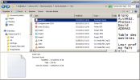

Affichages possibles dans l'explorateur
Attention :
Les exemples de ce cours sont basés sur les fichiers disponibles dans le volume L : dans le dossier "Berger".
Méthode : Affichage des documents sous forme d'icônes, de listes....
le choix entre les différents modes d'affichages se fait en cliquant sur le bouton "Plus d'option" à droite de la barre d'outils.
Nous travaillerons par la suite avec le mode détails
.
Pour obtenir l'image précédente vous devez faire apparaître les 4 volets dans le menu organisation et sélectionner le fichier examG11.
Définition : Fichier
Un fichier sous Windows 7 est un ensemble d'octets dont l'accès se fait par un nom (le nom de fichier) et une extension et une extension. Les fichiers ont une taille exprimée en octets, une date de création et une date de modification et un ensemble d'attributs de sécurités (formatage du disque en NTFS).
Méthode : Faire apparaître l'extension du fichier
Dans l'explorateur [Organisation[option des dossiers et de recherche[Affichage]]] cocher les cases indiquées sur cette image :
Méthode : Choisir les colonnes
L'utilisation du menu contextuel dans la barre des colonnes permet de sélectionner les colonnes voulues. Vous pouvez demander un ajustement automatique de la taille. Normalement vous devez pouvoir obtenir cela.
Méthode : Changement de l'ordre des colonnes
Un clic gauche sans relâcher le bouton permet de changer la colonne de position.
Méthode : Tri des fichiers
Un clic dans l'une des colonnes permet de trier les fichiers dans l'ordre de la colonne choisie. Le tri est par ordre croissant ou décroissant selon le nombre de clics dans la colonne.